Functional CAD design
Can It Actually Work?
Synthesizing Functional CAD Mechanisms
3D-printed prototypes of AI-generated designs
A CAD model can look right and still fail. We ask agents to build mechanisms that pass physics tests.
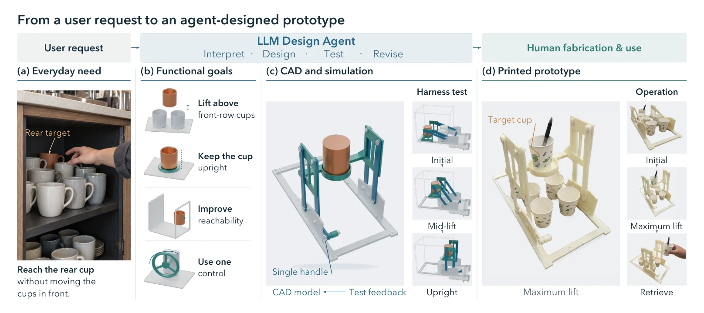
Looks right. Doesn’t work.
Plausible assemblies can hide interference that blocks the function.
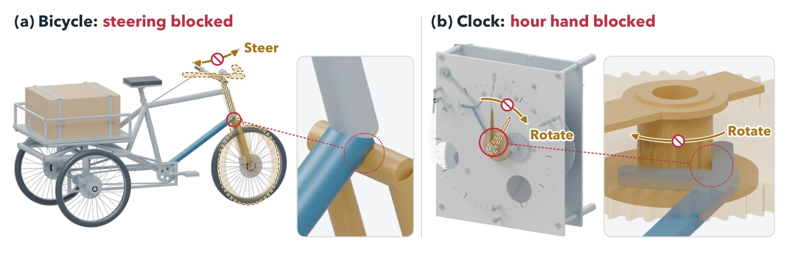
Test the function, not the look.
Each requirement becomes a physics test bound to the candidate’s own parts.
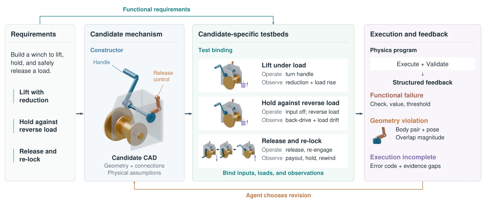
- RequirementsWhat it must do
- ConstructionCAD, joints, assumptions
- Test bindingTests fit this candidate
- ExecutionRigid-body physics + audits
- RevisionDiagnose and repair
Every candidate runs its own test.
Replays of recorded FunCAD-Harness tests from our experiment archive · original CAD geometry, display colors.
Fail. Diagnose. Repair.
Physical feedback tells the agent what broke, so the next revision fixes it.
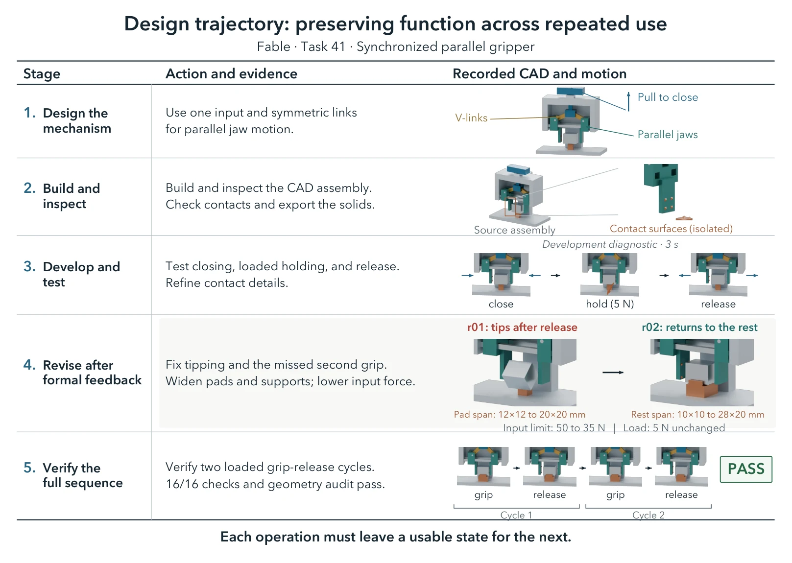
- Second grasp misses · 0 N of 10 N
- Wider pads and rest, 35 N input limit
- Second grasp 14.4 N · both cycles pass
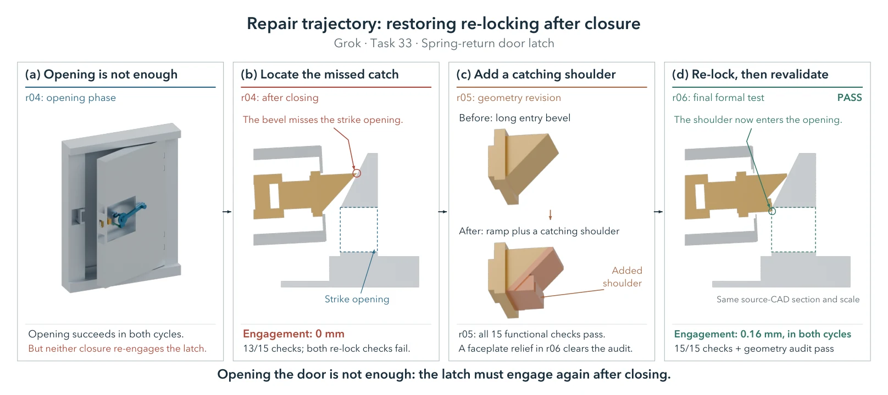
- Opens, but never re-locks · 13/15 checks
- Adds a catching shoulder, relieves the faceplate
- 15/15 checks + geometry audit
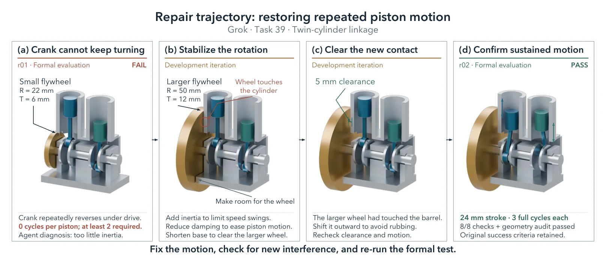
- Crank reverses under drive · 0 full cycles
- Larger flywheel, 5 mm cylinder clearance
- 8/8 checks + geometry audit
Printed. Assembled. Working.
3D-printed prototypes of AI-generated designs.
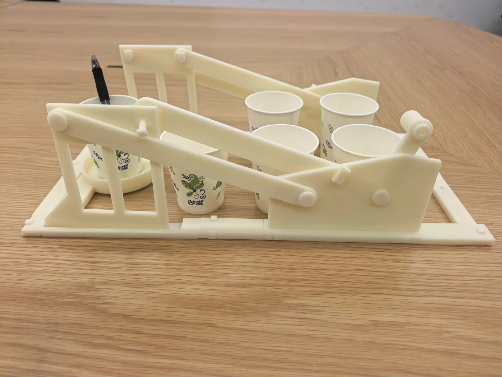
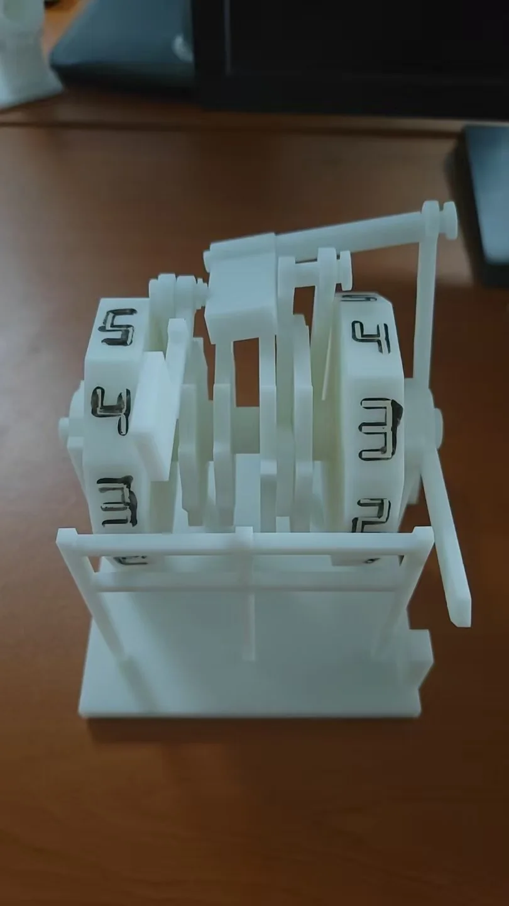
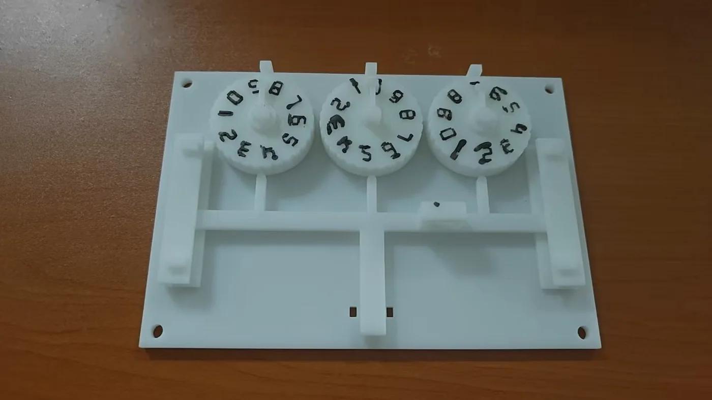
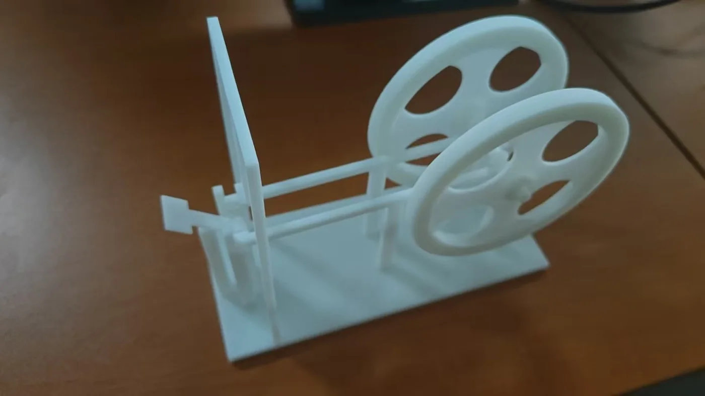
46 mechanism families.
From clamps and transmissions to clocks, counters, and coin sorters.
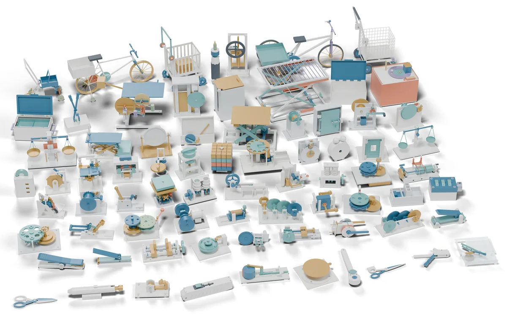
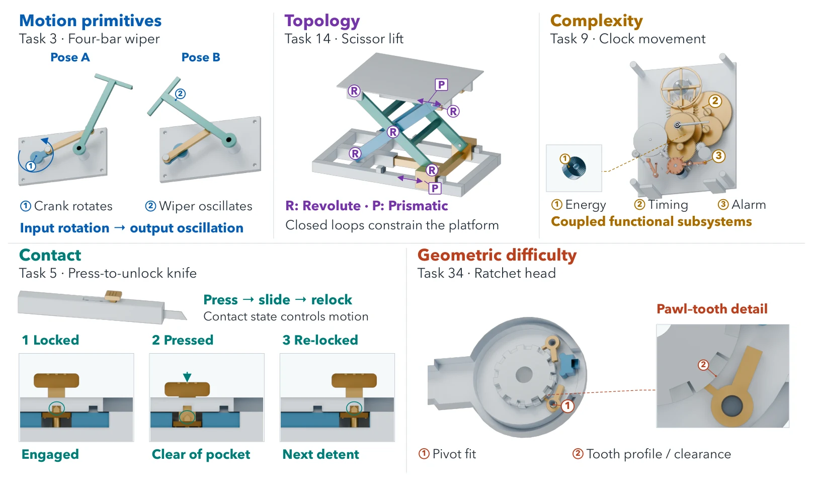
Browse the builds
Rendered from delivered CAD · tap to enlarge
All 46 families
Highlight by demand axis
Physics feedback makes better designers.
Tasks solved
out of 46 · full harnessUnder each name: median active time · est. API cost per task.